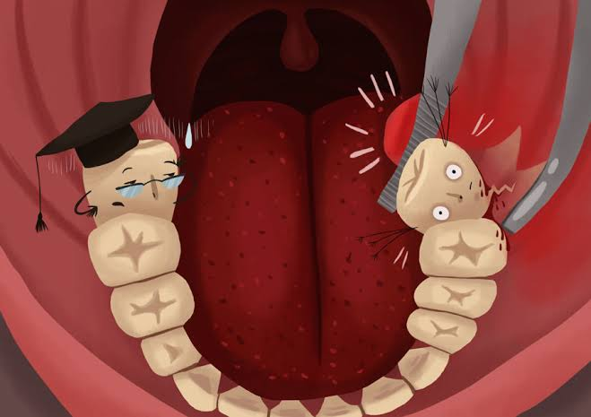

|  |
ฟันคุด คืออะไรอาการปวดฟัน จากปัญหา ฟันคุด เป็นอีกหนึ่งในปัญหาสุขภาพในช่องปากและฟันที่พบได้บ่อยๆ และมักจบลงด้วยการที่ทันตแพทย์แนะนำให้ผ่าฟันคุดออกเป็นส่วนใหญ่ ซึ่งหลายๆ คนยังมีข้อสงสัยเกี่ยวกับอาการฟันคุดนี้ว่า จำเป็นแค่ไหนที่ต้องผ่าออก และการผ่าฟันคุดออกนั้น มีข้อควรปฎิบัติ ตัวอย่างไร เรามีคำตอบมาฝากค่ะ สาเหตุการเกิดฟันคุดปกติแล้วฟันคุด คือฟันซี่ที่ควรจะขึ้นในช่วงอายุประมาณ 16-25 ปี โดยอาจโผล่ขึ้นมาในลักษณะ ตั้งตรง เอียง หรือนอนในแนวราบ และมักจะอยู่ชิดกับฟันซี่ข้างเคียงเสมอ ฟันคุดเกิดจากฟันที่พยายามงอกขึ้นมา จึงมีแรงผลักดันการงอก และเป็นไปได้ว่าจะเบียดฟันซี่ข้างๆ หรืองอกขึ้นมาในขากรรไกร จึงเป็นที่มาที่ทำให้เกิดอาการปวดฟันรุนแรง สร้างความทรมานแก่คนไข้ และนอกจากฟันคุดบริเวณฟันกรามล่างซี่สุดท้ายแล้ว ยังสามารถพบฟันคุดได้บริเวณฟันซี่อื่นๆ ฟันเขี้ยว ฟันกรามน้อย แต่พบได้น้อย กว่าฟันกรามล่างซี่สุดท้าย... |
- ฟันคุดตัวการทำให้ฟันผุ เมื่อฟันคุดงอกขึ้นมาในลักษณะผิดรูปจึงเป็นที่กักเศษอาหารได้เป็นอย่างดี และเมื่อเราไม่สามารถทำความสะอาดออกได้ทั้งหมด แน่นอนว่าเป็นเรื่องยากเพราะอยู่ลึกใกล้ลำคอด้านใน ส่งผลให้ฟันคุดซี่นั้นผุและมักลุกลามไปยังฟันซี่ข้างๆ ให้ผุตามไปด้วย ในบางรายนอกจาก จะต้องผ่าฟันคุดออกแล้ว ยังจำเป็นต้องถอนฟันซี่ข้างๆ ที่ผุออกตามไปด้วยอีกซี่ก็มี
- ฟันคุดบ่อเกิดปัญหาเหงือกอักเสบ เมื่อฟันคุดงอกโผล่ออกมาไม่หมด อาจมีเหงือกเข้าไป ปกคลุมฟัน และเมื่อมีเศษอาหารเข้าไปติดอยู่ใต้เหงือกแล้ว ไม่สามารถทำความสะอาดได้ เชื้อแบคทีเรียที่มาสะสมอยู่จะทำให้เหงือกเกิดการอักเสบ ปวดและบวมเป็นหนอง เกิดการแพร่กระจายของเชื้อโรค ไปยังส่วนอื่นๆ มีการติดเชื้อ บางรายกลืนไม่ได้ ลุกลามลงคอ อาจทำให้หายใจไม่ได้ จำเป็นต้องพบแพทย์โดยเร่งด่วน
- ฟันคุดมีโอกาสทำให้เกิดถุงน้ำ เมื่อมีฟันคุดเนื้อเยื่อรอบอาจพัฒนาเป็นถุงน้ำหรือเนื้องงอกได้ และด้วยฟันคุดที่มักอยู่ติดกับขากรรไกร จึงดัน เบียดกินกระดูกขากรรไกรไปเรื่อยๆ ในอนาคตจะส่ง ผลให้ใบหน้าผิดรูป มีโอกาสในการสูญเสียอวัยวะขากรรไกร และกระดูกขากรรไกรหักง่ายหากมีการกระทบ
เมื่อเอ็กซเรย์ตรวจพบตำแหน่งของฟันคุด ทันตแพทย์จะวางแผนการผ่าฟันคุดออก ซึ่งขั้นตอนการผ่าฟันคุดออกนั้นเป็นเรื่องง่าย ไม่ได้น่ากลัวอย่างหลายคนกังวล และไม่ต่างไปจากการถอนฟันซี่อื่นๆ มากนัก โดยทันตแพทย์จะใช้ยาชาเฉพาะที่เพื่อระงับความรู้สึก หลังจากนั้นก็จะเปิดเหงือกเพื่อให้เห็น ฟันคุดซี่นั้นๆ แล้วใช้เครื่องกรอตัดฟันออกมา แล้วล้างทําความสะอาดก่อนเย็บแผลปิด การผ่าฟันคุดไม่จำเป็นต้องเสียเวลาพักฟื้น เมื่อทำเสร็จสามารถกลับบ้านได้ไม่ต้องนอนพักฟื้นที่โรงพยาบาล
การดูแลรักษาภายหลังการผ่าฟันคุด
หลังผ่าตัดฟันคุด ห้ามบ้วนเลือดและนํ้าลาย เพราะอาจทําให้เลือดไหลไม่หยุดได้ ให้กัดผ้าก๊อ สนาน 1 ชั่วโมง กลืนนํ้าลายตามปกติได้ ประคบนํ้าแข็งบริเวณแก้ม เฉพาะวันที่ทําผ่าตัด หลังจากวัน ผ่าตัดอาจมีอาการปวดและบวมบริเวณแก้มด้านที่ทําการผ่าตัด จะรู้สึกว่าการอ้าปากลำบากและอ้าได้น้อยลง พูดได้น้อยลง แต่อาการจะหายไปได้เองเมื่ออาการบวมลดลง โดยในช่วงเวลานั้นสามารถรับประทานยาแก้ปวดและยาปฏิชีวนะตามแพทย์สั่ง เพื่อบรรเทาอาการ และรับประทานอาหารได้มากขึ้น แนะนำให้เลือกรับประทานอาหารชนิดอ่อนๆ ประมาณ 1 สัปดาห์ เพื่อป้องกันการกระทบกระเทือนต่อแผล แปรงฟันทําความสะอาดในช่องปากตามปกติ และกลับไปตัดไหมหลังผ่าตัด 5- 7 วัน